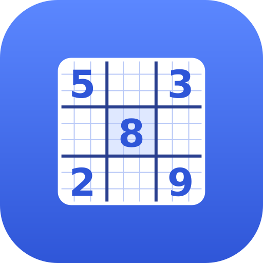

스도쿠
오프라인에서도 즐기는 숫자 퍼즐
이어하기
새 게임
쉬움
단서가 많은 입문용
보통
차분히 추리하면 풀려요
어려움
고급 기술이 필요해요
기록
설정
홈 화면에 설치하면 앱처럼 쓸 수 있어요.
설치
보통
00:00
실수
0
일시정지
계속하기
되돌리기
다시 실행
지우기
메모
끔
힌트
0
기록
기록 초기화
닫기
설정
오류 표시
틀린 숫자를 빨간색으로 보여줘요
같은 줄·같은 숫자 강조
선택한 칸과 관련된 칸을 표시해요
메모 자동 정리
숫자를 넣으면 같은 줄·칸의 메모에서 지워요
테마
자동
라이트
다크
닫기
🎉
완성했어요!
한 판 더
메뉴로
취소
확인
퍼즐을 만드는 중…
새 버전이 있어요.
업데이트